How to Search for Text in the Microsoft Notepad App (Windows 11)
This tutorial covers:
How to Use Find:
How to Use Find Next:
How to Use Find Previous:
How to Apply Match Case
How to Apply Wrap Around
How to Clear the Find Bar
How to Exit the Find Window:
How to Use Find and Replace:
No time to scroll down? Click through these tutorial slides:
Watch a video tutorial:
How to Use Find With Menu
- Step 1: First edit a Notepad file. In the upper left click the “Edit” button. 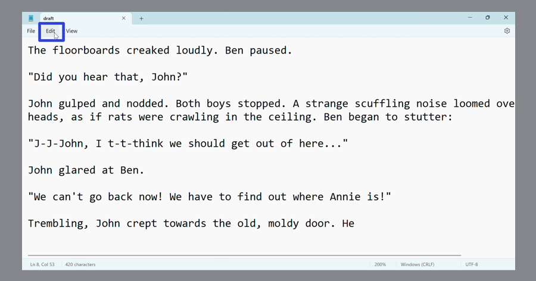
- Step 2: In the menu that opens, click “Find”. 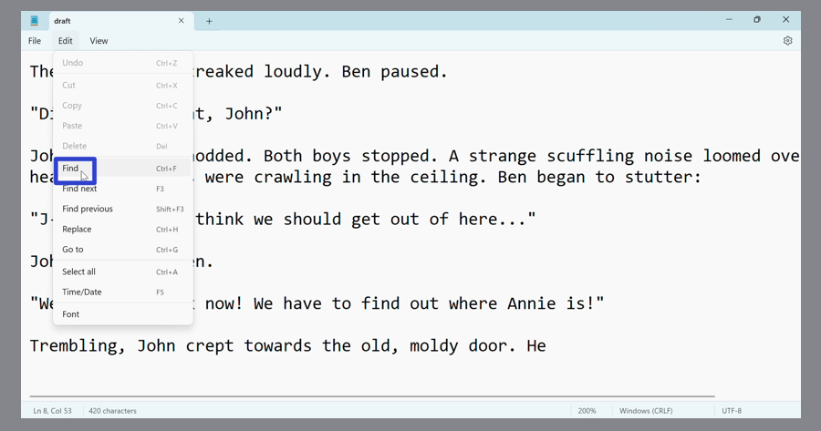
- Step 3: In the Find window that opens, type any text and click the magnifying glass button on the right. Notepad highlights the resulting text that matches the search term. 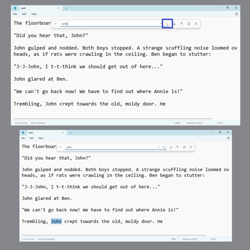
How to Use Find With Keyboard Shortcut
- Step 1: Edit a Notepad file. On the keyboard press Ctrl + F. 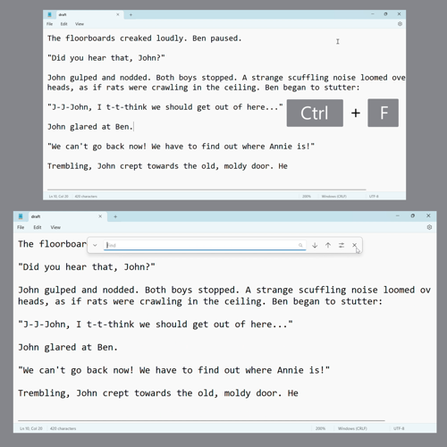
- Step 2: In the Find window that opens, type any text and press Enter. Notepad highlights the resulting text that matches the search term. 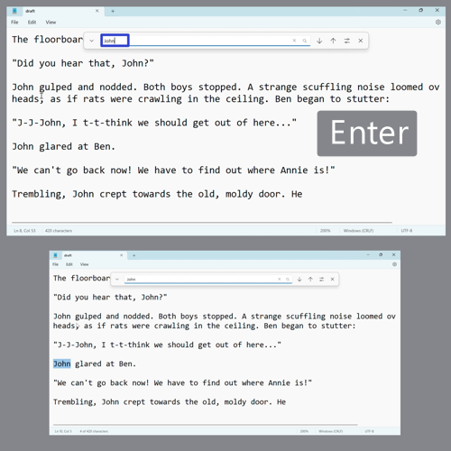
How to Use Find Next With Menu
- Step 1: First edit a Notepad file. In the upper left click the “Edit” button.
- Step 2: In the menu that opens, click “Find next”. 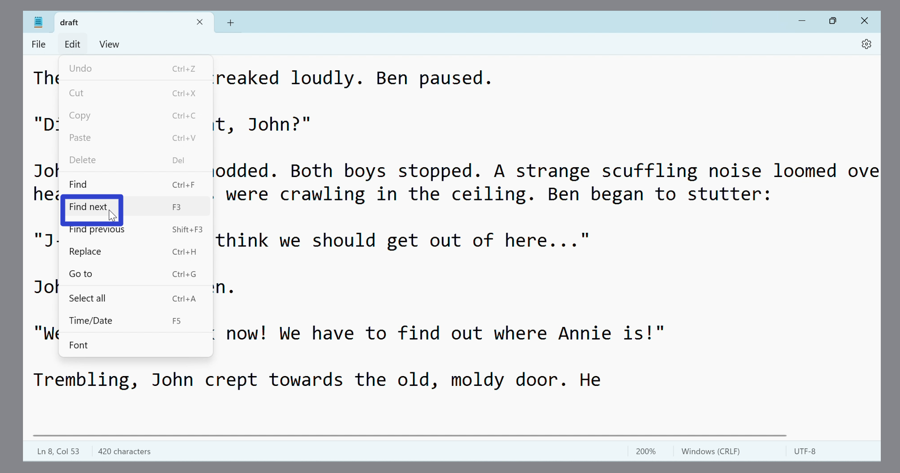
- Step 3: In the Find window that opens, type any text to search for. Continue clicking the “Edit” button and the “Find next” option to continue searching for the next instance of that text. 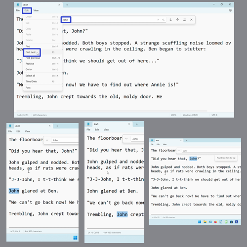
How to Use Find Next With Click
- Step 1: Edit a Notepad file and open the Find window.
- Step 2: Type any text to search for, and click the “Search down” or down arrow button. Continue clicking “Search down” to continue searching for the next instance of that text. 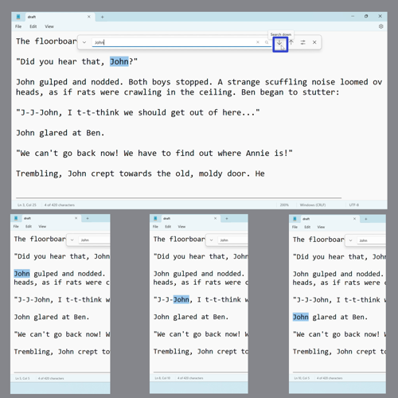
- Alternatively, continue clicking the magnifying glass button to continue searching for the next instance of that text. 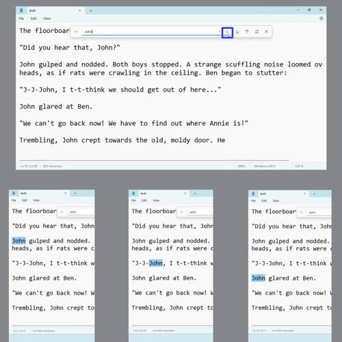
How to Use Find Next With Keyboard Shortcut
- Step 1: First edit a Notepad file. On the keyboard press F3 (some computers accept this shortcut as Fn + F3). 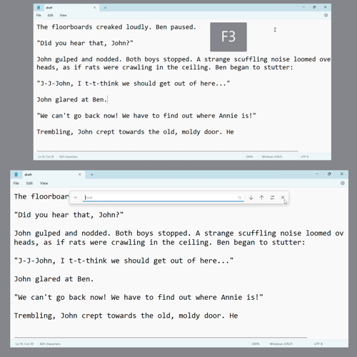
- Step 2: Type any text to search for, and continue pressing F3 or Fn + F3 to continue searching for the next instance of that text. 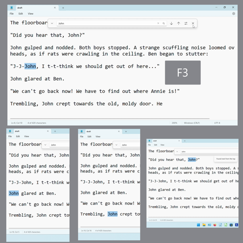
How to Use Find Previous With Menu
- Step 1: Edit a Notepad file. In the upper left click the “Edit” button.
- Step 2: In the menu that opens, click “Find previous”. 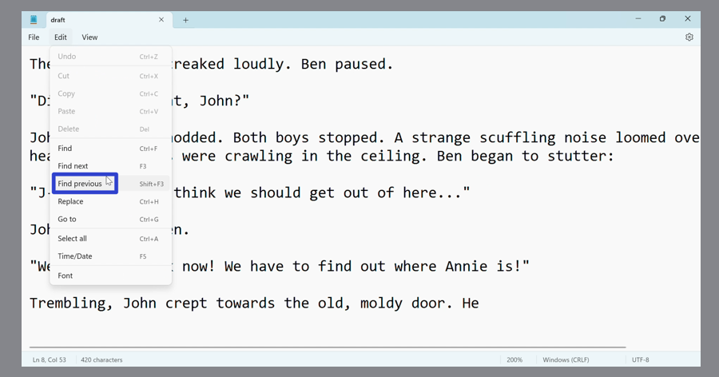
- Step 3: In the Find window that opens, type any text. Continue clicking the “Edit” button and the “Find previous” option to continue searching for the previous instance of that text. 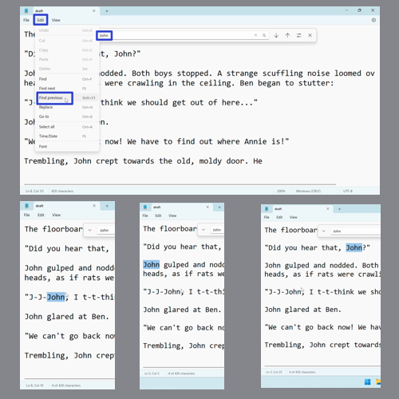
How to Use Find Previous With Click
- Step 1: First edit a Notepad file and open the Find window.
- Step 2: Type any text to search for, and click the “Search up” or up arrow button. Continue clicking the “Search up” button to continue searching for the previous instance of that text. 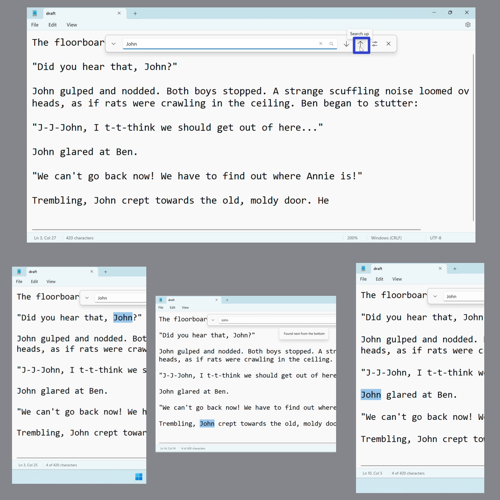
How to Use Find Previous With Keyboard Shortcut
- Step 1: Edit a Notepad file. On the keyboard press Shift + F3 (some computers accept this shortcut as Fn + Shift + F3). 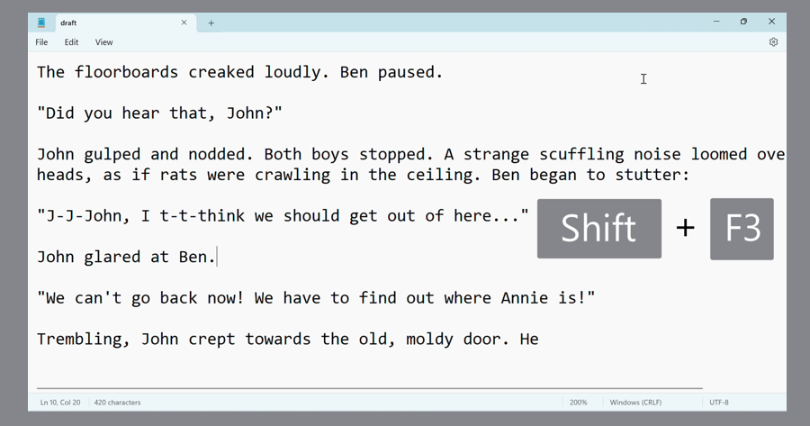
- Step 2: In the Find window that opens, type any text to search for. Continue pressing Shift + F3 or Fn + Shift + F3 to continue searching for the previous instance of that text. 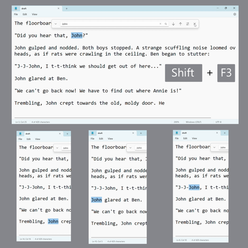
How to Apply Match Case
- Step 1: First edit a Notepad file and open the Find window. On the far right side of the Find window, click the “More options” button. 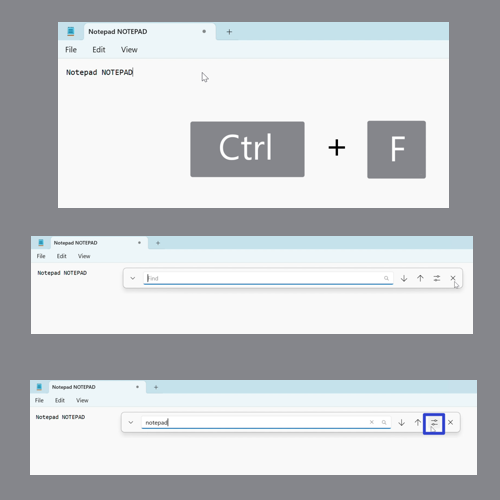
- Step 2: In the menu that opens, click “Match case” to toggle this option on or off. With “Match case” on, a check mark appears to the left of this option in the menu. The Find window searches for text that matches the exact same capital or lowercase letters as the search term. If no text matches these conditions, a message states that no match was found. 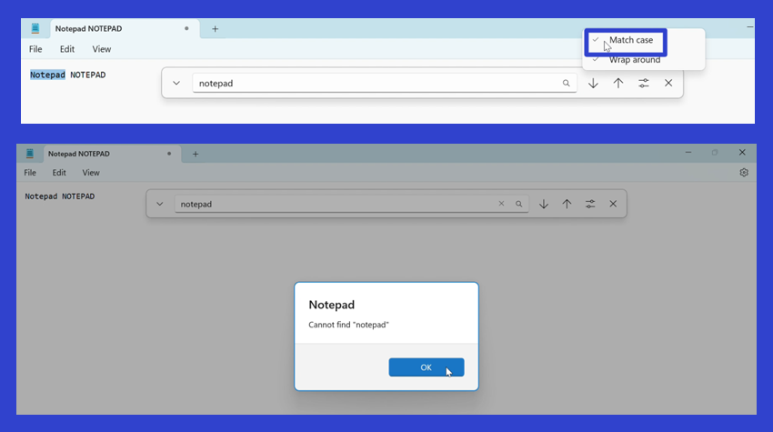
- With “Match case” off, the menu option does not display a check mark, and the Find window searches for any text that matches the search term, regardless of capital or lowercase letters. 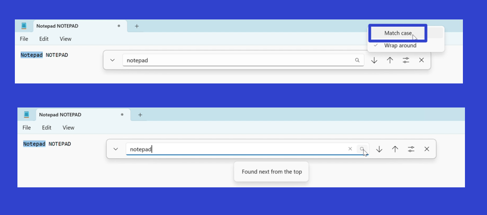
How to Apply Wrap Around
- Step 1: Edit a Notepad file and open the Find window. On the far right side of the window, click the “More options” button.
- Step 2: In the menu that opens, click “Wrap around” to toggle this option on or off. With “Wrap around” on, a check mark appears to the left of this menu option. The Find window searches for text from the top to the bottom of the Notepad window, over and over again. 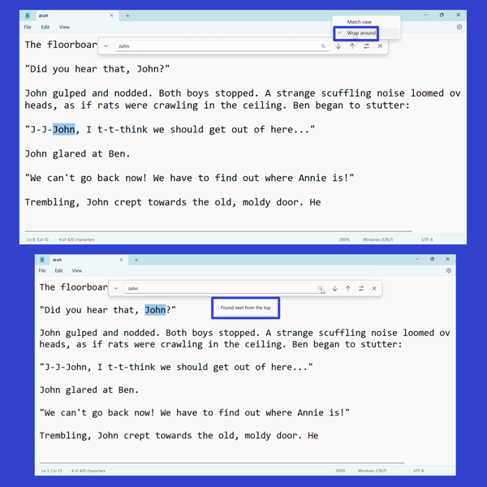
- With “Wrap around” off, the menu option does not display a check mark. The Find window searches for text from the top to the bottom of the Notepad window only once, and displays an error message if the text was not found. 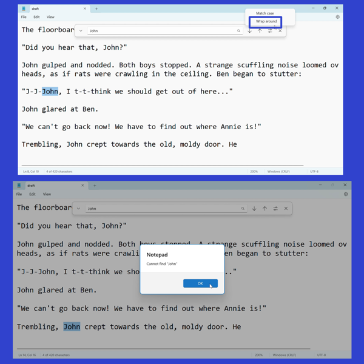
How to Clear the Find Bar
- Step 1: First edit a Notepad file and open the Find window. Click the “X” button to the right of the search bar. The search bar clears as the previous search term disappears. 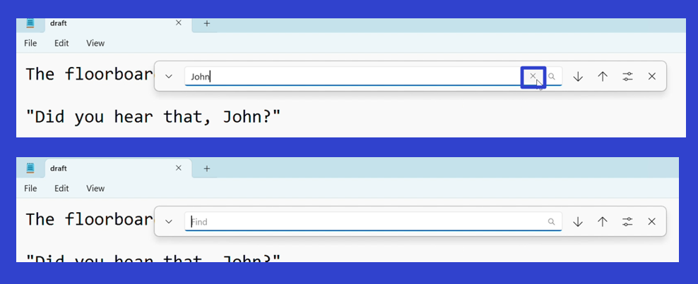
- Step 2: Click anywhere inside the Notepad window to deselect the previously highlighted text. The next time the Find window opens, the search bar will be empty. 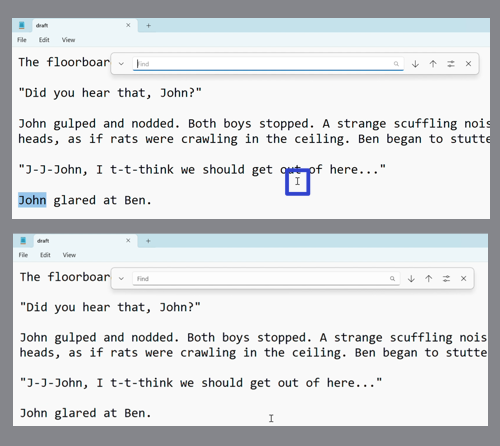
How to Exit the Find Window With Click
- Step 1: Open the Find window. On the far right side click the “Close” or “X” button. The Find window closes. 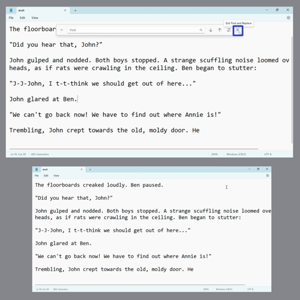
How to Exit the Find Window With Keyboard
- Step 1: First open the Find window. On the keyboard press Esc. The Find window closes. 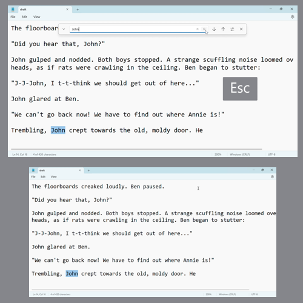
How to Use Find and Replace With Menu
- Step 1: Edit a Notepad window. In the upper left click the “Edit” button. 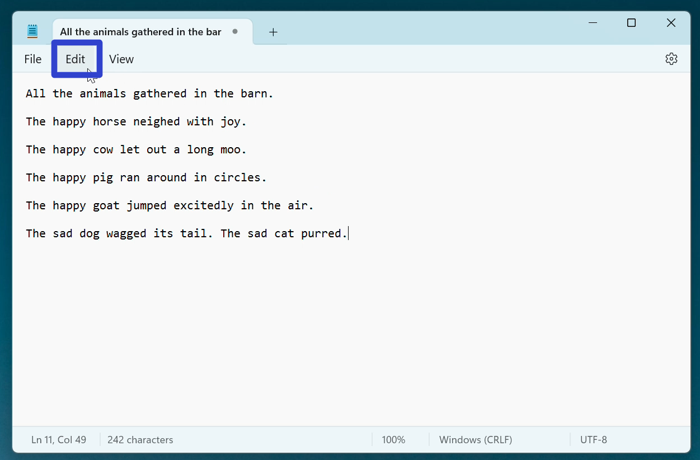
- Step 2: In the menu that opens, click “Replace”. 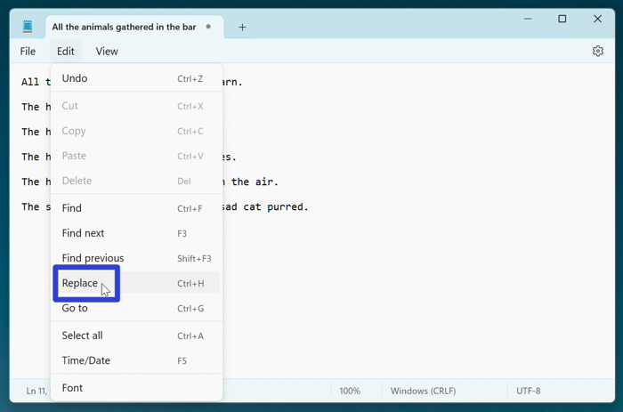
- Step 3: In the Find and Replace window that opens, type any text to search for in the top search bar. Type any text to replace it with in the lower search bar, and click the “Replace” button. Notepad finds and replaces the corresponding text. Keep clicking the “Replace” button to replace multiple instances of text. 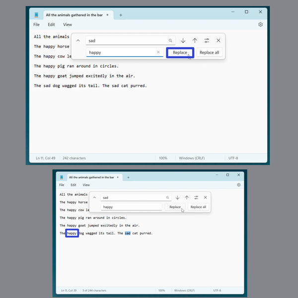
- Click “Replace all” to replace all instances of text at one time. 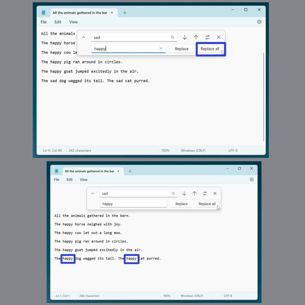
How to Use Find and Replace With Click
- Step 1: First edit a Notepad window and open the Find window. On the far left side click the “Open replace options” or down arrow button. 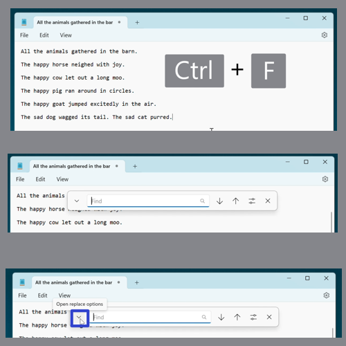
- Step 2: In the Find and Replace window that opens, type any text to search for in the top search bar. Type any text to replace it with in the lower search bar, and click “Replace” or “Replace all”. Notepad finds and replaces the corresponding text.
How to Use Find and Replace With Keyboard Shortcut
- Step 1: Edit a Notepad window. On the keyboard press Ctrl + H. 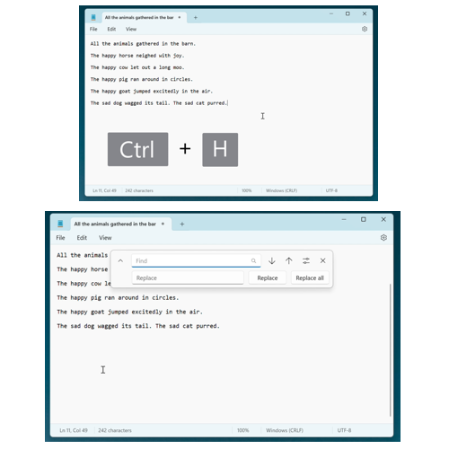
- Step 2: In the Find and Replace window that opens, type any text to search for in the top search bar. Type any text to replace it with in the lower search bar, and click “Replace” or “Replace all”. Notepad finds and replaces the corresponding text.
Refer to these instructions later with this free PDF tutorial.